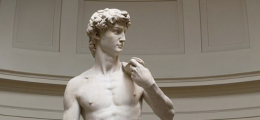

With sculpture, visual art is no longer limited to the dimensional surface of a painting, drawing, or photograph, as it consists of all three-dimensional artworks. A sculpture is most often produced using materials such as marble, wood, copper, or bronze.
Even today, these materials are most frequently used. However, with the arrival of new technologies, think of 3D printing, plexiglass, fiberglass, steel, epoxy, or electronic devices, sculpture takes on various materials used by contemporary sculptors. Not only did the technological developments affect the materials used, but so did the development of art history. One of the critical moments in recent art history is, without any doubt, Marcel Duchamp’s fountain, which introduced the ready-made into the three-dimensional world of sculpture. Ever since, daily objects, which can be pretty much everything, can be implemented in sculpture. Further, with the arrival of Installation Art, three-dimensional artworks are no longer fixed objects but can also be decors or assemblages of objects in a room.
David
David by Michelangelo is a Renaissance masterpiece, a towering marble sculpture of the biblical hero. With lifelike details, muscular form, and intense gaze, it symbolizes strength, human beauty, and defiance, capturing the moment before his battle with Goliath.
Christ the Redeemer

Christ the Redeemer is a colossal Art Deco statue in Rio de Janeiro, Brazil. Designed by Paul Landowski and Heitor da Silva Costa, it stands with open arms atop Mount Corcovado, symbolizing peace, love, and Brazilian Christianity.
Great Sphinx of Giza

The Great Sphinx of Giza is an ancient limestone statue in Egypt with a lion’s body and a pharaoh’s head, symbolizing strength and wisdom. Believed to represent Pharaoh Khafre, it remains one of the world’s most iconic monuments.
The Terracotta Army

The Terracotta Army is a vast collection of life-sized clay soldiers, horses, and chariots buried with China’s first emperor, Qin Shi Huang, to protect him in the afterlife. Each figure is uniquely detailed, showcasing ancient craftsmanship and military strength.